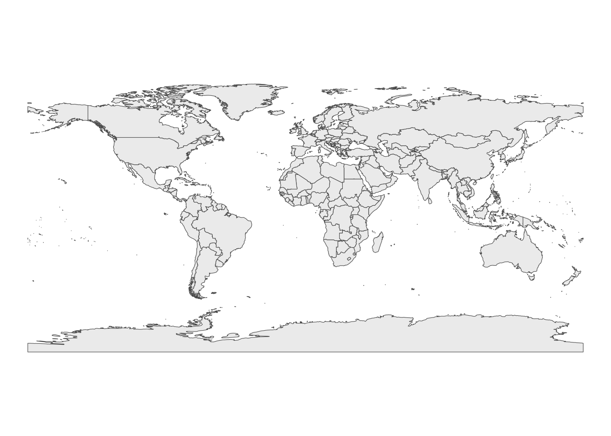

A color-coded world map made from a set of chocolate bar ratings.
Tidy Tuesday
R
map
Published
March 28, 2022
Modified
April 5, 2023
Introduction
For the week of January 18, 2022, #TidyTuesday featured the “Chocolate Bar Ratings” dataset from Flavors of Cacao. The reviews span from 2006 through 2022 and for each bar, details include the manufacturer and their location, the chocolate bean origin, ingredients and keyword-descriptions of each bar’s “most memorable characteristics, and of course, the rating.
As noted on the website, the chocolate included in the ratings database are a sampling of bars, not a comprehensive assessment of chocolate bars but rather rating dark chocolate bars based on one bar.
Each chocolate is evaluated from a combination of both objective qualities and subjective interpretation. A rating here only represents an experience with one bar from one batch. (…) The database is narrowly focused on plain dark chocolate with an aim of appreciating the flavors of the cacao when made into chocolate.
…here are some initial observations about the variables:
Variable
Details
Manufacturer
580 companies
Company location
67 countries
Year of review
2006-2021
Country where bean originated
62 countries
Cocoa %
seeds (or beans) that produce chocolate
Ingredients
B = beans, S = sugar, S* = sweetener (not white cane or beet sugar), C = cocoa butter, V = vanilla, L = lecithin, Sa = salt
Most memorable characteristics
keywords
Rating
1-4
World Map
After exploring the data, I went with mapping the countries in the dataset, color coding them by whether they:
only appear as the location of a manufacturing company
only appear as a bean origin country
or both
# Are there countries that appear in both columns? (33) Use #C0EDA6countries_both <- chocolate_raw %>%select(company_location, country_of_bean_origin) %>%unique() %>%# isolate countries in company_location that also appear in country_of_bean_originfilter(company_location %in%unique(country_of_bean_origin)) %>%# isolate only company_location and renameselect(country=company_location) %>%unique() %>%# add column that gives it green color to signify it appears in both varsadd_column(country_type="both")# countries that appear only in company_location (34) Use #8FBDD3countries_manufacturer <- chocolate_raw %>%select(company_location, country_of_bean_origin) %>%unique() %>%filter(!company_location %in%unique(country_of_bean_origin)) %>%select(country=company_location) %>%unique() %>%add_column(country_type="manufacturer")# countries that appear only in country_of_bean_origin (29) Use #FFF7BCbean_countries <- chocolate_raw %>%select(company_location, country_of_bean_origin) %>%unique() %>%filter(!country_of_bean_origin %in%unique(company_location)) %>%select(country=country_of_bean_origin) %>%unique() %>%add_column(country_type="bean origin")# combine above three into one dfchocolate_map <-rbind(countries_both, countries_manufacturer, bean_countries)
1. Load world map via rnaturalearth
library(rnaturalearth)world_map <-ne_countries(scale="medium",type="map_units", # to include Mauritaniareturnclass="sf")ggplot() +geom_sf(data=world_map, size=0.25, fill="#eeeeee") +theme_void()

2. Data cleaning
Check if any country names in world_map and chocolate_map do not match, i.e. Which country names in world_map do not appear in chocolate_map due to spelling differences or more granular divisions within what world_map considers a country. Goal: Create a layer of just the countries in chocolate_map to “layer” on top of the world_map basemap.
# A tibble: 18 × 2
country country_type
<chr> <chr>
1 U.S.A. both
2 Sao Tome both
3 St. Lucia both
4 Sao Tome & Principe both
5 St.Vincent-Grenadines both
6 U.K. manufacturer
7 Belgium manufacturer
8 Amsterdam manufacturer
9 U.A.E. manufacturer
10 Burma bean origin
11 Trinidad bean origin
12 Blend bean origin
13 Congo bean origin
14 Tobago bean origin
15 Sumatra bean origin
16 Principe bean origin
17 Sulawesi bean origin
18 DR Congo bean origin
Renaming countries in chocolate_map to how they appear in world_map.
chocolate_map_edit <- chocolate_map %>%# rename countriesmutate(country =str_replace_all( country,c("U.S.A."="United States of America", # old = new"Sao Tome$"="Sao Tome and Principe","St. Lucia"="Saint Lucia","Sao Tome & Principe"="Sao Tome and Principe","St.Vincent-Grenadines"="Saint Vincent and the Grenadines","U.A.E."="United Arab Emirates","Burma"="Myanmar","^Trinidad$"="Trinidad and Tobago","^Congo$"="Republic of Congo","^Tobago$"="Trinidad and Tobago","^Principe$"="Sao Tome and Principe","DR Congo"="Democratic Republic of the Congo" ) )) %>%# renaming "non-countries" as the country in which they're locatedmutate(country =str_replace_all( country,c("Amsterdam"="Netherlands","Sumatra"="Indonesia","Sulawesi"="Indonesia" ) )) %>%# remove country of "Blend" and also "Scotland" and "Wales" as the latter two will be represented by "United Kingdom" (all three are only manufacturing countries, plus "England" and "Northern Ireland" were not included in the chocolate data)filter(!country %in%c("Blend", "Scotland", "Wales")) %>%# renamings will produce duplicates so remove thoseunique()
Check: Rerun code from a to see if any countries from chocolate_map remain off of world_map.
Workaround: Add a third layer for Belgium and the UK since their geounit in world_map was of regions within those countries so using the admin column here in place of geounit as used above.
# A tibble: 14 × 3
word company_location n
<chr> <chr> <int>
1 smoke U.S.A. 26
2 smoke France 10
3 smoke Canada 5
4 smoke Italy 4
5 smoke New Zealand 4
6 smoke Australia 3
7 smoke U.K. 3
8 smoke Austria 2
9 smoke Colombia 2
10 smoke Japan 2
11 smoke Ecuador 1
12 smoke Germany 1
13 smoke U.A.E. 1
14 smoke Venezuela 1
# instead of going by word units, break up by placement of comma => there will be one word, two words, etc.chocolate_raw %>%select(most_memorable_characteristics, rating) %>%# split at commaseparate_rows(most_memorable_characteristics, sep =',', convert =TRUE) %>%#filter(str_detect(most_memorable_characteristics, regex(" "))) %>%group_by(most_memorable_characteristics) %>%summarize(characteristic_count =n(), mean_rating =median(rating)) %>%filter(characteristic_count>20) %>%arrange(desc(mean_rating))